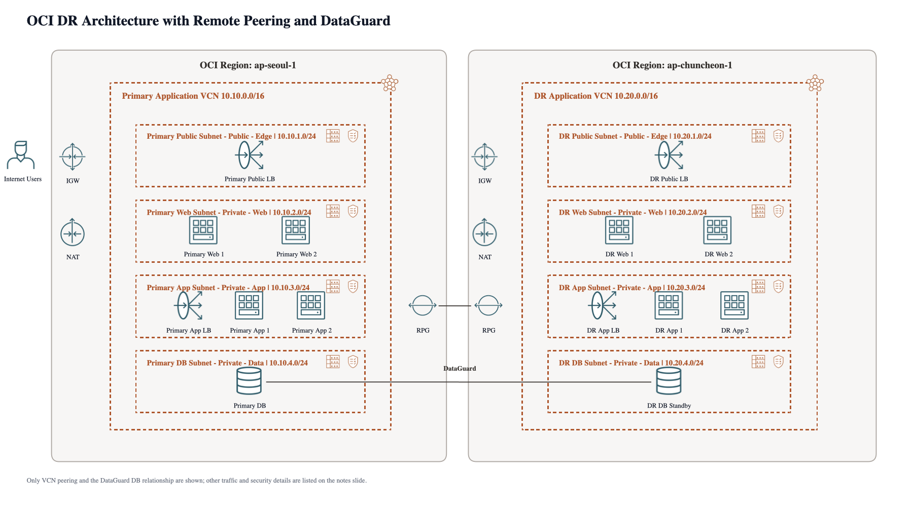

OCI ArchGen Skills
Codex skills for generating editable Oracle Cloud Infrastructure architecture PowerPoint diagrams.

Example output rendered from
examples/dr-remote-peering-3tier-dg.pptx. The PowerPoint deck remains editable.
Editable PPTX
Generates deterministic Office Open XML decks with editable containers, labels, notes, and connector objects.
OCI Layout Rules
Applies Region, VCN, subnet, gateway, OSN, LoadBalancer, and DataGuard placement conventions.
Validation
Includes package, model coverage, containment, icon sizing, and layout checks for generated diagrams.